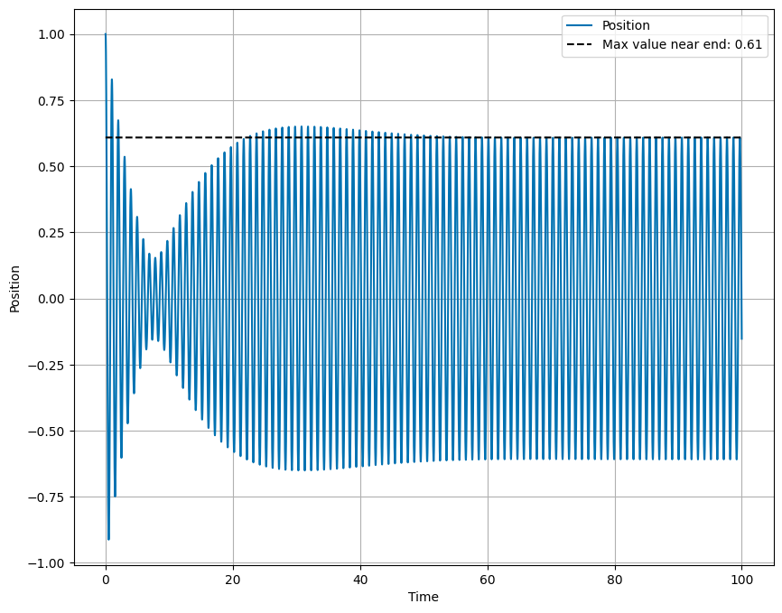

Homework 7 (Due 22 Mar)#
Solution Homework 7, Spring 2024
import numpy as np
from math import *
import matplotlib.pyplot as plt
import pandas as pd
%matplotlib inline
plt.style.use('seaborn-v0_8-colorblind')
Exercise 1 (10pt) Where does the energy go?#
The damped harmonic oscillator is described by the equation of motion is:
where \(m\) is the mass, \(b\) is the damping coefficient, and \(k\) is the spring constant.
The damping term (\(F_{damp} = - b\dot{x}\)) models the dissipative forces acting on the oscillator. The total energy for the oscillator is given by the sum of the kinetic and potential energies,
1a. What is the energy per unit time dissipated by the damping force?
Solution
The energy dissipated per unit time is related to the power of the damping force. The definition of power, which is an instantaneous quantity, is given by the dot product of the force and velocity.
Note that the damping force is opposite to the velocity, so the power is negative. The power is given by:
1b. Take the time derivative of the total energy and show that it is equal (in magnitude) to the energy dissipated by the damping force.
Solution
The time derivative of the total energy is given by:
If we look at the equation of motion, we see that \(m\ddot{x}+kx = -b\dot{x}\), so we can write the time derivative of the energy as:
This is the same as the power dissipated by the damping force.
1c. What is the sign relationship between the energy dissipated by the damping force and the time derivative of the total energy?
Solution
The negative sign in both cases indicate that energy is leaving the system. We expect the energy to decrease over time, and the power dissipated by the damping force is the rate at which the energy is leaving the system.
Exercise 2 (10pt), Unpacking the critically damped solution#
The solution for critical damping (\(\beta = \omega_0\)) is given by,
where \(A\) and \(B\) are constants. Notice the second solution \(x_2(t) = Bte^{-\omega_0t}\) has an additional linear term \(t\). We glossed over this solution in class, but it is important to understand why this term is present because it tells us about solving differential equations with pathologically difficult-to-see solutions.
Start with the under damped solutions,
where we have used the notation \(\omega_1 = \sqrt{\omega_0^2 - \beta^2}\).
2a. Show that you can recover the first solution \(x_1(t)\) by taking the limit of \(\beta \rightarrow \omega_0\) of \(y_1(t)\).
Solution
In the limit that \(\beta \rightarrow \omega_0\), we have \(\omega_1 \rightarrow 0\). This means that the \(\cos(\omega_1 t)\) term in \(y_1(t)\) goes to 1. We are left with \(e^{-\beta t}\cos(\omega_1 t) \rightarrow e^{-\omega_0 t}\). This is the first solution \(x_1(t)\).
2b. Show that you cannot recover the second solution \(x_2(t)\) by taking the limit of \(\beta \rightarrow \omega_0\) of \(y_2(t)\) directly. What do you get?
Solution
In this case, the same limit that \(\omega_1 \rightarrow 0\) means that \(y_2(t) = e^{-\beta t}\sin(\omega_1 t) \rightarrow 0\). This is because the sine function tends to zero. This is not the second solution \(x_2(t)\), but rather the trivial solution \(x_2(t) = 0\). This is not the correct limit to take to recover the second solution.
2c. If \(\beta \neq \omega_0\), you can divide \(y_2(t)\) by \(\omega_1\). Now show that in the limit \(\beta \rightarrow \omega_0\) of \(y_2(t)/\omega_1\), we recover the form of \(x_2(t)\).
Solution
If however, we are careful and divide \(y_2(t)\) by \(\omega_1\), we have:
We can take the limit of this expression as \(\beta \rightarrow \omega_0\), or \(\omega_1 \rightarrow 0\). The core of the expression is:
which we can expand the sine function as a Taylor series:
The limit of the expression is then:
Thus, the limit of \(y_2(t)/\omega_1\) as \(\beta \rightarrow \omega_0\) is:
This gives the form of the second solution \(x_2(t) = Bte^{-\beta t}\).
Exercise 3 (10pt), Complex Analysis#
Many of the techniques we use to solve differential equations rely on complex analysis. In this exercise, we will explore the relationship between complex numbers and the solutions to the differential equation. This is to motivate why we bother using them in the case of oscillators.
3a. Show that a complex number \(z = a + bi\) can be written in polar form as \(z = r(e^{i\theta})\), where \(r = \sqrt{a^2 + b^2}\) and \(\theta = \arctan(b/a)\). Draw a picture of the complex plane and the vector from the origin to the complex number \(z\).
Solution
We plot the complex number on a plane with the Real part along the x-axis and the Imaginary part along the y-axis, so that the number \(z=a+bi\) is at the point \((a,b)\). The magnitude of the complex number is the hypotenuse of the triangle formed by the real and imaginary parts, \(r = \sqrt{a^2 + b^2}\). The angle \(\theta\) is the angle between the real axis and the vector pointing to the complex number, \(\theta = \arctan(b/a)\).
3b. Prove that the absolute value of the complex number \(z\), \(|z| = \sqrt{a^2 + b^2}\), is given by the square root of the product \(zz^{*}\).
Solution
As we defined above, the complex number \(z = a + bi\) has the complex conjugate \(z^* = a - bi\). The product of the complex number and its conjugate is:
The absolute value of the complex number is \(|z| = \sqrt{a^2 + b^2}\), which is the square root of the product \(zz^*\). This is much simpler once we define the complex conjugate in terms of \(r\) and \(\theta\).
3c. Show that \(z^{*} = r(e^{-i\theta})\). Start from the definition of \(z\).
Solution
We can write the comple conjugate in rectangular form as \(z^* = a - bi\). Plotting this in the complex plane, we can see that the angle between the real axis and the vector pointing to the complex conjugate is \(-\theta\). The magnitude of the complex conjugate is the same as the magnitude of the complex number, \(r\). Thus, the complex conjugate is \(z^* = r(e^{-i\theta})\).
3d. Show that \((z_1z_2)^* = z_1^*z_2^*\).
Solution
This is simplest to do with the definition in polar form where \(z = r(e^{i\theta})\). We define our two complex numbers thusly,
with complex conjugates,
The product of these two complex numbers is:
The complex conjugate of this product is:
This is precisely the product of the complex conjugates of the two numbers, \(z_1^*z_2^*\),
3e. Show that \((1/z)^* = 1/z^*\).
Solution
Again, we start from the polar definition of the complex number \(z = r(e^{i\theta})\). The reciprocal of this number is,
The complex conjugate of this number is,
Thus, \((1/z)^* = 1/z^*\).
3f. Show that \(z=Ce^{i(\omega t)}\) produces an algebraic equation for C when used in the differential equation for the damped harmonic oscillator. What is the equation? What would happen if you instead used \(x(t) = A\cos(\omega t)\)?
Solution
The differential equation for the damped harmonic oscillator is:
By choosing the complex solution \(z(t) = Ce^{i\omega t}\), we can write the derivatives as:
Putting these into the differential equation, we have:
Because all the terms share the same complex function \(Ce^{i\omega t}\), we can divide through by this term to get an algebraic equation for the relationship between the parameters, which if satisfied give rise to the solution form we found.
This gives us what frequencies \(\omega\) are allowable if our solution is meant to follow the form. This approach fails to be as simple if we choose the real solution \(x(t) = A\cos(\omega t)\), because the derivatives of this function are not as simple as the complex exponential.
It is this last result that often motivates our use of complex numbers in solving differential equations. We can turn a differential equation into an algebraic equation, which is often easier to solve.
Exercise 4 (10pt), Exploring the damped harmonic oscillator#
You can choose to solve this exercise using analytical, or graphical methods. Should you decide to use numerical methods, you should make sure to use a method that conserves energy. However, this exercise does not need to be solved numerically as closed form solutions exist.
The solution to the simple harmonic oscillator is given by,
where \(A_{sho}\) and \(B_{sho}\) are determined by the initial conditions. The solution to the underdamped harmonic oscillator is given by,
where \(A\) and \(B\) are also determined by the initial conditions.
Scenario 1#
An undamped oscillator has a period \(T_0 = 1.000\mathrm{s}\), but then the damping is turned on. We observe the period increases by 0.001 seconds.
4a. What is the damping coefficient \(\beta\)?
Solution
The new period of the damped oscillator is \(T_1 = 1.001\mathrm{s}\). The period of the damped oscillator is given by \(T_1 = 2\pi/\omega_1\). We can solve for the angular frequency \(\omega_1\) and then the damping coefficient \(\beta\).
The relationship between the angular frequency and the damping coefficient is \(\omega_1 = \sqrt{\omega_0^2 - \beta^2}\). We can solve for the damping coefficient,
4b. By how much does the amplitude of the oscillation decrease after 10 periods?
Solution
The new period is \(T_1=1.001\mathrm{s}\), so the total time for ten periods is \(10T_1 = 10.01\mathrm{s}\). The amplitude of the damped oscillator is given by \(A = A_{sho}e^{-\beta t}\). After ten periods, the fraction it has decayed is
So the amplitude has decreased by 94%.
4c. What would be able to notice more easily, the change in period or the change in amplitude?
Solution
Definitely the change in amplitude. The change in period is only 0.1% of the original period, which is very difficult to notice. The amplitude, on the other hand, has decreased by 94%, which is very noticeable.
Scenario 2#
An undamped oscillator has a period \(T_0 = 1.000\mathrm{s}\). With weak damping, the amplitude drops by 50% in one period \(T_1\). Recall the period of the damped oscillator is given by \(T_1 = 2\pi/\omega_1\).
4d. What is the damping coefficient \(\beta\)?
Solution
If we assume weak damping, and we notice the period will not change much, but the amplitude will in one period. Let’s estimate \(T_1 \approx T_0 = 1.000\mathrm{s}\). The amplitude of the damped oscillator is given by \(A = A_{sho}e^{-\beta T_1}\). We know that the amplitude has decreased by 50% in one period, so we can write,
So that the damping coefficient is,
4e. What is the period of the damped oscillator?
Solution
Here we use that the new frequency is \(\omega_1 = \sqrt{\omega_0^2 - \beta^2}\). The undamped frequency is \(\omega_0 = 2*\pi/T_0\), so that we can compute:
And thus the new period is,
4f. By how much does the amplitude of the oscillation decrease after 10 periods?
Solution
With \(\beta = 0.693\mathrm{s}^{-1}\), the amplitude of the damped oscillator is given by \(A = A_{sho}e^{-\beta t}\). After ten periods, the fraction it has decayed is,
So the amplitude has decreased by 99.9%.
4g. What would be able to notice more easily, the change in period or the change in amplitude?
Solution
Definitely the amplitude. The period has changed by 0.6%, which is very difficult to notice. The amplitude, on the other hand, has decreased by 99.9%, which is very noticeable.
Exercise 5 (10pt), The Damped Driven Oscillator#
The damped driven oscillator is described by the equation of motion,
where \(F_0\) is the amplitude of the driving force and \(\omega\) is the frequency of the driving force. We reduced this equation by dividing by \(m\) to get the equation of motion in terms of the damping coefficient \(\beta = b/2m\) and the natural frequency \(\omega_0 = \sqrt{k/m}\). In the equation below, \(f(t) = F_0/m\).
We solve this equation for sinusoidal driving forces, \(f(t) = f_0\cos(\omega t)\) and demonstrated the resonance effect. In this exercise, we will numerically solve the equation of motion. This will allow us to explore the behavior of the damped driven oscillator for different periodic driving forces, not just sinusoidal ones.
Below we have written a numerical solver for the damped undriven oscillator; it’s similar to the prior codes we’ve used. Your task is to modify the code to include a driving force. We have used the second order Runge-Kutta method to solve the equation of motion. You can use the code as a starting point for the damped driven oscillator.
def driver(t):
"""
Function defining the driving force.
Can be modified to explore different driving mechanisms.
"""
F0 = 1.0
omega = 6.2
phase = 0.0
return F0 * sin(omega * t - phase)
def DDHO(y, t, omega_0, beta):
"""
Function to compute derivatives based on the damped driven oscillator model.
Notice the driving force is include but zero.
"""
x, v = y
dxdt = v
dvdt = -2 * beta * v - omega_0**2 * x + driver(t)
return np.array([dxdt, dvdt])
def rk2_step(y, t, dt, omega_0, beta):
"""
Performs a single step of the Runge-Kutta 2nd order (midpoint) method.
parameters:
- y: current state [position, velocity].
- t: current time.
- dt: time step size.
- omega_0: natural frequency of the oscillator.
- beta: damping coefficient.
returns:
- y_next: state time step dt [position, velocity].
"""
k1 = DDHO(y, t, omega_0, beta)
k2 = DDHO(y + 0.5 * k1 * dt, t + 0.5 * dt, omega_0, beta)
y_next = y + k2 * dt
return y_next
# Simulation parameters
T = 100.0 # total time
dt = 0.01 # time step
omega_0 = 2.0 * np.pi # natural frequency
beta = 0.1 # damping coefficient
steps = int(T / dt)
t = np.linspace(0, T, steps)
y = np.zeros((steps, 2)) # Array to hold position and velocity
## Initial conditions
y[0] = [1.0, 0.0] # x=1, v=0
for i in range(steps - 1):
y[i + 1] = rk2_step(y[i], t[i], dt, omega_0, beta)
oscillator = pd.DataFrame(y, columns=["Position", "Velocity"])
oscillator["Time"] = t
# Plotting the results
plt.figure(figsize=(10, 8))
plt.plot(oscillator["Time"], oscillator["Position"], label="Position")
plt.xlabel("Time")
plt.ylabel("Position")
plt.grid(True)
## print the max value of the position near the end of the simulation for the last 10% of the time
maxNearEnd = oscillator["Position"].iloc[-int(steps/10):].max()
plt.plot(oscillator["Time"], maxNearEnd * np.ones(steps), label="Max value near end: {:.2f}".format(maxNearEnd), linestyle="--", color="black")
plt.legend()
<matplotlib.legend.Legend at 0xffff4e196ea0>

Extra Credit - Integrating Classwork With Research#
This opportunity will allow you to earn up to 5 extra credit points on a Homework per week. These points can push you above 100% or help make up for missed exercises. In order to earn all points you must:
Attend an MSU research talk (recommended research oriented Clubs is provided below)
Summarize the talk using at least 150 words
Turn in the summary along with your Homework.
Approved talks: Talks given by researchers through the following clubs:
Research and Idea Sharing Enterprise (RAISE): Meets Wednesday Nights Society for Physics Students (SPS): Meets Monday Nights
Astronomy Club: Meets Monday Nights
Facility For Rare Isotope Beam (FRIB) Seminars: Occur multiple times a week